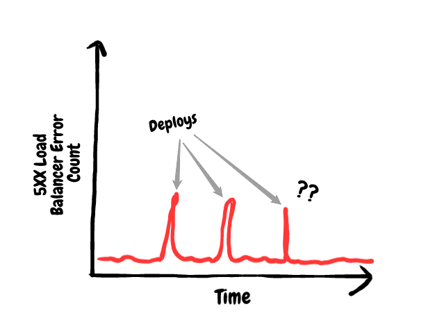
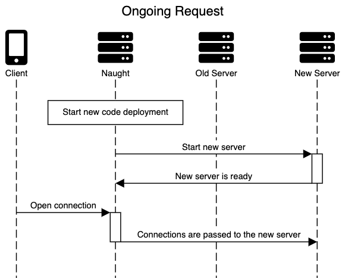
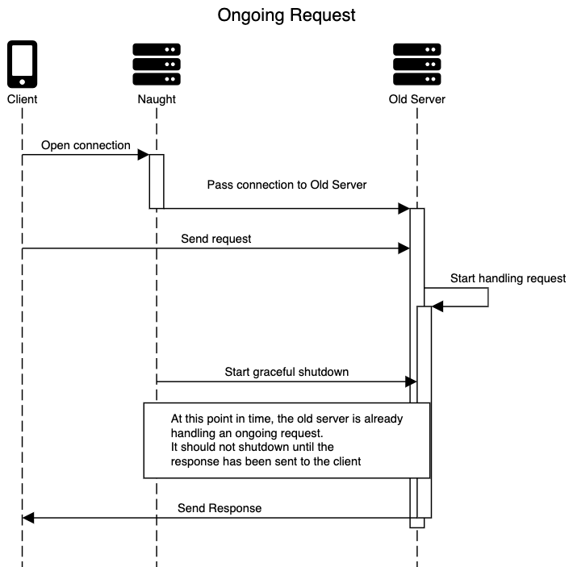
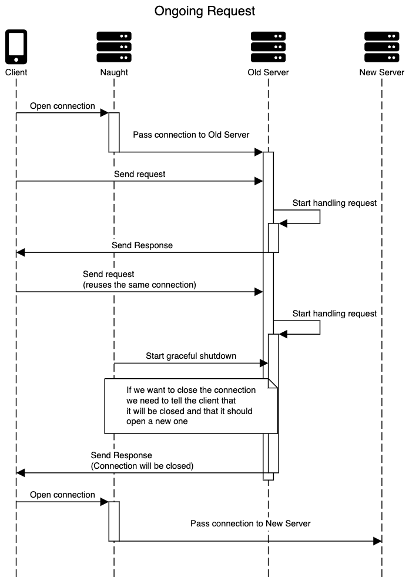

Implementing NodeJS HTTP Graceful Shutdown
I wrote this blog post many years ago. It was the first blog post I ever wrote (not that I have written many since then), and I recently came across it again. It brought back nice memories. Different times. It was nice doing a deep dive on some random networking topic while trying to improve things, at least to some extent.
In hindsight, it's kind of funny. At the end of the day, what I was doing was implementing connection draining properly. At the time, none of the common graceful shutdown libraries did it properly: all of them missed the handling of in-flight requests, which was a common scenario for us during deploys (I know this for a fact, I tested them all).
Any old load balancer already does this well, but at the time we weren't even using Docker containers, just straight-up Node.js under the cluster module. So new workers would replace the old ones in place, and we had to do the connection draining manually.
The right solution ended up being to simply move to containers and let the load balancer deal with it. At the same time, when you see a problem like that, and you know that some clients are getting hit by it, you might as well fix it if you can (even if it's something low-level-ish like this).
And make a blog post out of it, I guess.
How we fixed an issue we had with our zero-downtime code deployment at Dashlane
Introduction
If you're reading a post with such a compelling title as "Implementing NodeJS HTTP Graceful Shutdown," you might have run into the same issue that we did here at Dashlane: how to deploy new code for NodeJS servers without ever dropping any requests or generating any errors. A while back, we realized we were generating some errors on clients each time we deploy new server code. This is commonly referred as "gracefully shutting down" your old server and redirecting traffic to a new one—all while still continuing to handle any client requests.
This article details how we found out about this issue, checked out existing solutions, and finally decided to come up with our own solution. It is meant to teach about this specific (probably very niche 😅) issue and also showing in detail how this kind of problem-solving process might look.
The Pain
Back in January, 2020, Dashlane's server team was doing routine performance and reliability review of our main API servers. We realised that every time we deployed changes and swapped our running server with servers running new code, we would get a spike in 500 HTTP errors. The spikes weren't seriously big but they were not negligible either.
(The issue has since been solved, so I can't grab a screenshot of what our monitoring used to look like. Here is a drawing instead.)

For context, here are the numbers:
- On each deploy we got a spike of around 600 errors.
- Our servers are handling between 20,000 and 30,000 requests per second.
- The whole server restart procedure lasts around 5 seconds, which means that around 100,000 and 150,000 requests will need to be handled during this time.
- As a result, we were failing to properly handle 0.4-0.6% of requests being sent by apps during code deploys.
0.6% of calls doesn't seem like all that much but these are the kind of cryptic errors that neither client developers nor actual users would necessarily know how to handle. So we decided to dig into our code to see how our servers were being shut down and try to alleviate this spike of errors.
The way our servers were being shut down was (roughly) thus:
- Spawn a new version of the server with the new code in the same machine.
- Direct any new connections or requests to the new server.
- Let the old server run for 5 seconds to let pending requests be handled.
- Cross fingers, shut down the old server and hope for the best. 🤞😬
Not really the most graceful of shutdowns but it worked well enough.
We decided to improve this behavior and started researching approaches to graceful shutdown of a NodeJS server. With the thousands of people using NodeJS for their backend we figured that this was probably a solved problem. It turned out to be a very-much-not-really-solved problem.
Understanding The Problem And Looking For Solutions
We went into NodeJS's HTTP server documentation to see if it had anything there that would help in dealing with graceful shutdown. It turns out that a server instance has a close() function that seems to do what we want.
From the documentation:
Stops the server from accepting new connections and keeps existing connections. This function is asynchronous, the server is finally closed when all connections are ended and the server emits a 'close' event.
Oh, cool, this seems to do what we want! 🎉
But then we came across this old issue on GitHub (from 2015) that made me realize that this function alone would not be enough for graceful shutdown:
Keep alive connection do not get closed with server.close()
The gist of it is that clients can send a "Connection: keep-alive" header in their requests to tell the server to keep the TCP connection between client and server open to be reused by future requests. This is a good thing! Setting up a connection can take time and resources for clients and servers, so being able to reuse them saves the work involved in creating a new connection for each request.
Our problem here, is that even if the server code calls this close() function, clients can still keep using the existing connections to send new requests. And as long as the client keeps using an open connection, the server won't finish being closed. However, even if the server code called this close() function, the clients don't have a way to know that the server is trying to shut down or that there is a new one available for new connections.
(Psst: If your networking knowledge could use some plussing-up I suggest checking out Julia Evan's zines. This one on networking is free and this one on HTTP is paid. I've found them really helpful in the past.)
The discussion in the comment section issue seemed to get pretty heated. A bunch of approaches were suggested to deal with this behaviour. None of them were accepted to be added to NodeJS's core so a bunch of them ended up being implemented as npm packages.
That is cool! Maybe someone already successfully solved this issue in a way that we could also use! 🎉
The first part of trying out open source packages is testing them to see if they are a good fit. So we set out to set up a test scenario that somewhat replicated our current setup at Dashlane and see if one of these packages would allow us to gracefully shutdown our servers.
Spoiler Alert: The next section explains how we came up with a small test setup to verify if the existing solutions met our requirements. Tl,dr: They didn't, so we decided to come up with our own solution. If you just want to know how our solution works, you can skip ahead to the "Coming up with our solution" section.
Testing Out Implementations: Requirements
The first part of testing solutions to this problem is figuring out exactly what we mean by graceful shutdown and under what conditions it needs to work.
First we need to define what we want out of a graceful shutdown implementation for our NodeJS servers. At a very high level, the end result of what we want is the following: We want to be able to restart our servers with new code without generating any unexpected errors due to the old servers being shut down. This means several things:
- During the graceful shutdown process, all incoming requests on new or old connections are properly handled by the server.
- Old connections should be closed in a way that does not generate errors on the client.
- The server should never hang indefinitely while trying to shut down gracefully.
Then we must also define the conditions under which graceful shutdown needs to happen. These conditions consist of the following requirements at Dashlane for graceful shutdown of our backend:
First, It needs to happen under the library we currently use for zero-downtime deployments, which is Naught. Naught is a package that uses NodeJS's Clusters to achieve zero-downtime deployments. Under Naught, there is a main NodeJS process and several worker NodeJS processes. The main process is the entry point for new connections which are then passed on to the worker processes. The worker processes are the ones running our actual code and instantiating NodeJS HTTP servers. The important thing for us is that when we're deploying new code, we launch new worker processes and all new connections are directed to them as soon as they are online. Our code needed to handle closing existing connections, but it needed to be compatible with NodeJS's Clusters.
Second, it needs to handle the load our servers are under. This is between 20,000 and 30,000 requests per second, which amounts to something around 200 and 300 requests per second for each server instance.
Third, the solution needs to be able to deal with network latency (a.k.a. lag) something often hand-waived away. When we think about solutions to these kinds of issues, we often end up imagining that requests from clients instantly get to the servers. In the context of graceful shutdown, the fact that a request could have left a client but not have reached the server yet can have a real impact that must be taken into account.
So in summary, the implementation must:
- Be compatible with Naught and NodeJS Clusters.
- Be able to handle a constant load of 200-300 requests per second.
- Be able to take network latency into account.
Testing Out Implementations: The Setup
To test existing implementations of graceful shutdown, we set up a codebase with a dummy server running under Naught and a script that can be used to send requests at a fixed interval and log the result.
This is what the request script looks like:
const request = require('request-promise')
let counter = 0
const reqFrequency = process.argv[2] || 50
async function makeRequest() {
counter += 1
const localCounter = counter
const start = Date.now()
try {
const res = await request
.post({
url: 'http://localhost:8000',
headers: {
accept: 'application/json',
connection: 'keep-alive',
'content-type': 'application/json',
counter: localCounter,
},
body: '{}',
forever: true,
})
.catch(e => {
throw e
})
const result = {
timestamp: start,
count: localCounter,
success: true,
response: res,
duration: Date.now() - start,
}
console.log(JSON.stringify(result))
} catch (error) {
console.log(
JSON.stringify({
timestamp: start,
count: localCounter,
success: false,
error: error.message,
duration: Date.now() - start,
}),
)
}
}
setInterval(() => makeRequest(), reqFrequency)It will send a request to the server and log whether the request succeeded or failed, along with some other information.
The server-side code looks like this:
The main entry point just sets up the minimal stuff to be ran under Naught:
const server = require('./server')
server.startServer(() => {
console.log('online')
process.send('online')
})
process.on('message', message => {
if (message === 'shutdown') {
console.log('start shutdown')
server.stopServer().finally(() => {
console.log('finished shutdown')
process.exit(0)
})
}
})(Naught will send a 'shutdown' signal after starting a new server instance that will trigger the graceful shutdown procedure.)
And the actual server code is shown below. This file will set up a server listening on port 8000. It will handle requests by replying a 200 success after a random delay to emulate actually doing something with the request. The serverStoppers file can be used to plug-in different graceful shutdown implementations.
const http = require('http')
const serverStoppers = require('./serverStoppers')
const RESPONSE_TIME_MS = 100
const RESPONSE_TIME_MAX_VAR_MS = 50
// This function will emulate actually doing something to the request by
// replying after some random delay
const handleReq = (_req, res) => {
const responseTime =
RESPONSE_TIME_MS +
Math.random() * RESPONSE_TIME_MAX_VAR_MS * 2 -
RESPONSE_TIME_MAX_VAR_MS
setTimeout(() => {
res.writeHead(200)
res.end(`${responseTime}ms`)
}, responseTime)
}
const server = http.createServer(handleReq)
// You can replace different graceful shutdown implementations here.
// A function to start graceful shutdown must be returned.
const startGracefulShutdownFunc = serverStoppers.someGracefulShutdownImplementation.getServerStopFunc(
server
)
const startServer = cb => {
server.listen(8000, cb)
}
const stopServer = () => {
console.log('Stopping server')
return startGracefulShutdownFunc()
.then(() => {
console.log('Server stopped gracefully')
})
.catch(error => {
console.log('Something went wrong while stopping server', error)
})
}
module.exports = {
startServer,
stopServer,
}With this setup we can do the following:
The server can be ran under Naught with the following command:
naught start --remove-old-ipc true --stderr stdout.log app.js
Once the Naught daemon is running, the server restart procedure can be triggered by this other command:
naught deploy
And you can check all the server's logs by looking at the stdout.log file
In a separate terminal, once the server is up and running, we can start sending requests to it with the requestScript.js file. A command line argument can be given to control the frequency at which requests will be sent to the server in milliseconds.
Like this:node requestScript.js 4
The final requirement is the trickiest. This setup should be able to simulate a network latency, where the request takes a while to get from the client to the server. This can be achieved in a OS X environment with network packet filters and dummy net traffic shapers. These tools can be used to tweak the network packets going through the local network on your machine and doing things like adding a delay to them. The following commands will do just that:
### Add delay in OS X (500ms to each packet)
sudo pfctl -E
sudo dnctl pipe 1 config bw 10Mbit/s delay 500 plr 0
echo "dummynet out proto tcp from any to localhost pipe 1" | sudo pfctl -f -
### Remove
sudo pfctl -F dummy
sudo dnctl -q flush
sudo pfctl -d
### List
sudo pfctl -sa
sudo dnctl listNote: the 500ms are applied to each network packet, so the resulting delay per actual request will be bigger. These commands won't work on Linux; Another set of tools have to be used but there is plenty of info on that on the web. I just haven't tested any so I can't recommend one.
Note 2: If you want to go up to 250 requests per second, you'll have to reduce the delay. Otherwise, you start to get some random connection errors on the client side with this setup.
With all this setup we have all the tools to test graceful shutdown implementations and see if they meet our requirements.
Testing out implementations: Results
Sadly, after testing we were disappointed to find that none of the most popular npm packages used for graceful shutdown were able to meet all of our requirements. 😞
The packages we tested had the following issues:
- Some packages were not compatible with NodeJS Clusters. They worked reasonably fine if ran directly but would generate errors when starting the shutdown process if ran under Naught.
- Some packages generated errors on the client side under high loads between 200 and 300 requests per second.
- The packages that were able to handle high load would still generate a lot of errors when network latency was introduced.
- Some packages would include features that we didn't really want, like handling of signals
Some of these packages would still be an improvement on our current way to handle the shutdown of servers. However, seeing that all of them had one or more issues we decided to dig in deeper. After reviewing the code used in different approaches to solve this issue, we decided to come up with our own solution that would match our specific needs.
Note: We chose to not to explicitly mention the different npm packages that we tested. The point of this article is not to criticize the result of the work people have done for free to handle this issue. Any problems found will be shared directly with the maintainers of the packages directly.
Coming Up With Our Solution
The problem of graceful shutdown of an HTTP server in NodeJS can be divided into 3 things that we need to do:
Stop accepting new connections: This is already handled for us by Naught and calling server.close(). As soon as a new worker running our server is available, Naught will stop sending new connections to the old server and send them to the new one instead.

Finish handling ongoing requests: Whenever we decide to stop the old server, there could be a number of requests that have already reached the server and that are currently being handled. With a rate of 200-300 requests per second this is almost a certainty. A graceful shutdown implementation must wait for all of these requests to complete before actually shutting off the server or closing the connections.

Close all "keep-alive" connections without generating errors on the client side: As explained earlier, when server.close() is called, all connections that were open will not be closed. They must be tracked and closed manually. Additionally, they need to be closed in a way that doesn't come as a surprise to the clients. This means that we shouldn't close a connection if a request is being handled on that connection or if a request has already left the client and the connection would be closed before it reaches the server. It also means that we must communicate to the client that the connection will close, so that it knows that it shouldn't send any new requests on that connection.

As explained, point 1 is already handled so we don't need to deal with it.
Solving points 2 and 3 will require keeping track of all incoming connections and requests, we can't avoid the overhead of this. We should be able to know at any point whether there are any open connections and how many, if any, requests are using each connection. Given that we'll have to track all connections and requests, the code involved must be lightweight and efficient so that the performance hit to our request handling is kept as low as possible. With this information we can know whether there is an ongoing request on any connection and wait for it to complete.
Finally, to solve the issue of letting clients know that the server wanted to close the connection we started looking around at other implementations and see how other people were doing it. A common "trick" we found was using a Connection header in the response to tell the client that the server would like to close the connection. Looking at the MDN docs about it, it turns out that sending Connection: close in the response headers does exactly that. If we keep track of every request en each connection, we can add this header to the last request being handled and close the connection once the response has reached the client (or at least left the server). If the header hasn't been sent for a specific connection we'll keep it open to wait for a new request on it and send back the header.
Finally, we also decided to make a tradeoff. If after an arbitrary amount of time the server still has some open connections we just close them anyway. This might happen if a client keeps a connection open but doesn't send any new requests on it. This would be similar to how servers (or load-balancers) usually have some kind of timeout setting for keep-alive connections. This could generate some kind of error on the clients, but we don't want to keep the old server up indefinitely.
With all this, we have everything that we need for our implementation of graceful shutdown
Show Me The Code
The solution we came up with is next. It has a lot of comments and explanations to try to explain why everything is done.
/**
* Copyright 2020 Dashlane
*
* Licensed under the Apache License, Version 2.0 (the "License");
* you may not use this file except in compliance with the License.
* You may obtain a copy of the License at
*
* http://www.apache.org/licenses/LICENSE-2.0
*
* Unless required by applicable law or agreed to in writing, software
* distributed under the License is distributed on an "AS IS" BASIS,
* WITHOUT WARRANTIES OR CONDITIONS OF ANY KIND, either express or implied.
* See the License for the specific language governing permissions and
* limitations under the License.
*
*
* Helper function to allow better handling of keep-alive connections for
* graceful termination of a server. Calling `server.close()` will stop the server
* from accepting new connections, but existing keep-alive aren't closed nor handled
* in any special way by default. https://github.com/nodejs/node/issues/2642 shows
* that this can keep a server for being shutdown cleanly after serving ongoing requests.
*
* This function will keep track of all opened connections and ongoing requests.
*
* The main idea is trying to serve all ongoing requests before shutting down the
* server while trying to minimize the "socket hangup" or "connection reset"
* errors on clients.
*
* Once the server starts being terminated, the server will reply with
* Connection: close headers to signal clients not to send requests on existing
* connections because they will be closed. This is done to minimize the chance
* of closing a connection while there is an in-flight request to the server.
*
* All connections for which a Connection: close response has been sent, will be
* terminated after handling the last request.
*
* After a timeout, all idle connections with no ongoing requests will be closed,
* even if they haven't received the Connection: close header.
*
* After a bigger timeout, if some connections are still keeping the server
* open, all connections will be forced closed and ongoing requests will not
* send a response.
*/
const serverStoppingHelper = server => {
// If the server needs to be stopped and it seems to be having trouble keeping up with pending requests
// we should just force the closing of the connections
const forcedStopTimeout = 30000
// In cases a client is sending no more requests, we won't have the opportunity to send Connection: close back
// In these cases we should just end the connection as it has become idle.
// Note that this could be achieved internally with server.keepAliveTimeout but
// the normal runtime value might be different for what we'd like here
const timeoutToTryEndIdle = 15000
// We need to keep track of requests per connection so that we can detect when we have responded
// to a request in a keep-alive connection. This is the only way in node that we can close a
// keep-alive connection after handling requests.
const reqCountPerSocket = new Map()
// To minimize the chances of closing a connection while there is a request in-flight from the client
// we respond with a Connection: close header once the server starts being terminated. We'll only
// immediately close connections where we have responded this header. For others, we'll only
// close them if they're still open after "timeoutToTryEndIdle"
// This won't help against clients that don't respect the Connection: close header
const hasRepliedClosedConnectionForSocket = new WeakMap()
let terminating = false
const trackConnections = socket => {
reqCountPerSocket.set(socket, 0)
socket.once('close', () => {
reqCountPerSocket.delete(socket)
})
}
const checkAndCloseConnection = req => {
const socketPendingRequests = reqCountPerSocket.get(req.socket) - 1
const hasSuggestedClosingConnection = hasRepliedClosedConnectionForSocket.get(
req.socket,
)
reqCountPerSocket.set(req.socket, socketPendingRequests)
if (
terminating &&
socketPendingRequests === 0 &&
hasSuggestedClosingConnection
) {
req.socket.end()
}
}
const trackRequests = (req, res) => {
const currentCount = reqCountPerSocket.get(req.socket)
reqCountPerSocket.set(req.socket, currentCount + 1)
if (terminating && !res.headersSent) {
res.setHeader('connection', 'close')
hasRepliedClosedConnectionForSocket.set(req.socket, true)
}
res.on('finish', () => checkAndCloseConnection(req))
}
const endAllConnections = ({ force }) => {
for (const [socket, reqCount] of reqCountPerSocket) {
if (force || reqCount === 0) {
socket.end()
}
}
}
server.on('connection', trackConnections)
server.on('request', trackRequests)
const stoppingFunction = cb => {
terminating = true
// cb won't be called as long as there are open connections
// So here we're "implicitly" also waiting for the callbacks
// that will close idle connections or force close all connections
// after a delay
server.close(cb)
if (timeoutToTryEndIdle < forcedStopTimeout) {
setTimeout(() => endAllConnections({ force: false }), timeoutToTryEndIdle)
}
setTimeout(() => endAllConnections({ force: true }), forcedStopTimeout)
}
return stoppingFunction
}
const getServerStopFunc = server => {
const serverStopperFunc = serverStoppingHelper(server)
return () =>
new Promise((resolve, reject) => {
serverStopperFunc(error => {
if (error) {
return reject(error)
}
return resolve()
})
})
}
module.exports = {
getServerStopFunc,
}Success 🎉
We tested this implementation in the testing setup described above and it performed better than all the other npm packages we tried.
We then tested this in production and poof! The 600 errors spike on each deploy was gone. This allows us to deploy our code even more confidently and with the knowledge that we're not causing any headaches to either users or other Dashlane developers.
We are pretty happy with this result.
However, it is worth mentioning that there are some important caveats to this implementation:
- This implementation only works if the clients respect the
Connection: closeheader. Most client implementation will do so, but if they don't there is not much we can do about it. - This solution is only for HTTP servers, HTTPS might behave slightly differently. This means that you should only use this solution in a configuration where your clients are being served through HTTPS at some other point in the network. For example, in our case the servers are behind a load balancer that handles HTTPS connections with clients and the servers cannot be directly accessed from the outside the internal network.
- This solution only applies for the HTTP 1 protocol, which is used by NodeJS's HTTP server. The HTTP2 protocol (used only by NodeJS http2 module) does not allow
Connection: keep-aliveorConnection: closeheaders. In HTTP2, persistent connections are the default and closing connections with clients is done differently. - Test if this implementation works for you first. As shown by the methodology used here, you should not just blindly pick this code. For example, we consciously decided to close all connections abruptly after some delay which might not be something that should be done in some other context.
Some Closing Words
If you got all the way down here, congrats! 🎉🎉 (And also my sympathy: you clearly are trying to solve the same problem.)
If you have any comments or questions, don't hesitate to leave a comment or reach out to me @jmarroyo90. I'll be glad to help.